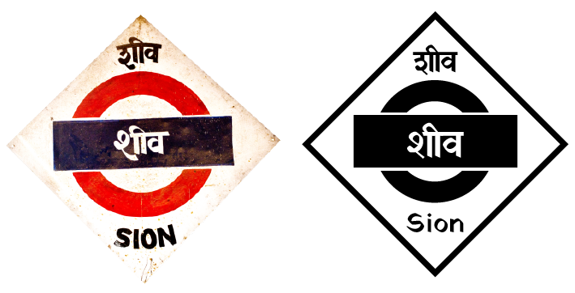

Yatra mimics the high-contrast, modulated, chunky style of Mumbai rail sign painting. Like the rail signs, Yatra includes basic Marathi support. Yatra mimics the high-contrast, modulated, chunky style of Mumbai rail sign painting. Like the rail signs, Yatra includes basic Marathi support.
The Latin in Yatra shares a brush angle with its Devanagari. The typeface attempts to capture the liveliness and error that make painted signs endearing. The Latin in Yatra shares a brush angle with its Devanagari. The typeface attempts to capture the liveliness and error that make painted signs endearing.

पश्चिम रेलव
- ॐ
- ऋgद्ग
- ₹क्षQ७¾
- ñट्ट४$&मfi
समोसा.................... ₹10
PAV BHAJI.......... ₹25
वडा पाव.................. ₹5
BHEL PURI......... ₹30
फालूदा.................... ₹50
साबूदाना वडा.......... ₹45
वडा पाव.................. ₹5
BHEL PURI......... ₹30
फालूदा.................... ₹50
साबूदाना वडा.......... ₹45